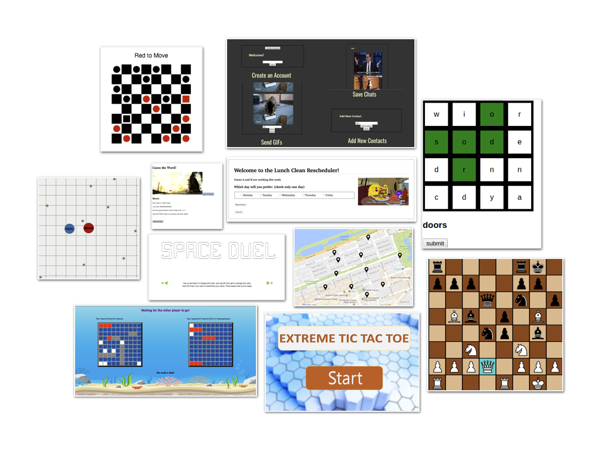

By now, you know the fundamentals of program design. CS 2 aims both to deepen that technical knowledge and to broaden its scope.
Guiding our inquiry this year will be the question: how do we represent this idea in code? Asked in different contexts, this question will lead us to discover a host of new data structures, above and beyond the structs and lists you used last year. These, in turn, will motivate us to develop new forms of abstraction, to help manage the complexity of our new representations. This emphasis on abstraction and data representation will form the technical backbone of the course.
But another goal of the course is for students to become more broadly literate in the technical debates of today. Programming assignments, readings, and in-class discussions will highlight relevant controversies, and connect them to the technical curriculum we are studying. Potential topics include “cookies” and user tracking, regulation and free expression on the Internet, encryption, cryptocurrencies like Bitcoin, and machine learning.
This course also prepares students for the AP Computer Science Principles exam in May.
We will begin the year with an introduction to static type systems and the programming language Go. Students will explore various techniques for data abstraction (such as encapsulation and polymorphism) in programming assignments significantly more sophisticated than those in CS 1. In November, we will embark on a series of month-long case studies, each with its own mini-project. Each case study will both require students to synthesize various data structures and programming techniques, and inform them about a new computer science discipline or tech ethics issue.
In our first case study, students will implement classic machine-learning algorithms like Naïve Bayes classification and logistic regression from scratch, then consider the ethical implications of collecting and learning from data. In our second, students will use Go’s concurrency primitives to simulate the protocols that make the Internet work (ARP, IP, TCP, HTTP), and evaluate arguments about net neutrality. In the third, students will use TCP to create a simplified distributed blockchain, as they read about Bitcoin and Ethereum. In our last case study, students will learn the fundamentals of client-side development, and use cookies to implement “ad re-targeting,” in which a user who looks at a product but does not purchase it is then shown ads for it around the web. Finally, students do a project (alone or in pairs) on a topic of their choice, typically a web-app or multiplayer video game with server and client components.